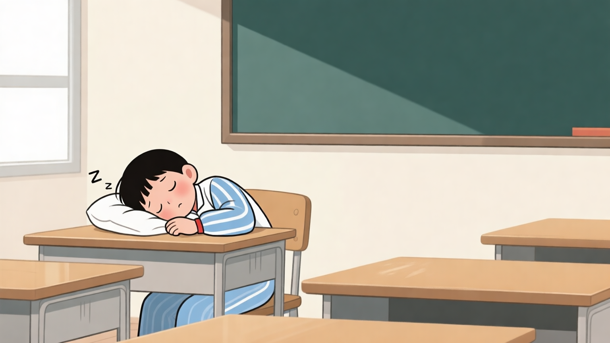

睡觉
Experimental raster

Current deterministic SVG fallback
Request and provenance
{
"concept": "睡觉",
"request": {
"id": "raster-ab-1",
"concept": "睡觉",
"scene_description": "Chinese language classroom illustration of 睡觉; clear action, no text.",
"illustration_role": "benchmark_primary_visual",
"style_profile": "soft_flat_educational_v1",
"aspect_ratio": "16:9",
"width": null,
"height": null,
"negative_constraints": [
"no words",
"no watermark",
"no learner-facing metadata"
],
"seed": null,
"candidate_count": 1,
"language_context": {},
"source_trace": [
"diagnostics/raster_provider_ab"
],
"warnings": []
},
"latency_ms": 13981.0,
"raster": {
"provider": "experimental_openai_images",
"model": "Qwen/Qwen-Image",
"local_path": "assets/01-raster.png",
"mime_type": "image/png",
"width": 1536,
"height": 864,
"prompt": "Chinese language classroom illustration of 睡觉; clear action, no text.",
"revised_prompt": null,
"seed": 2500913,
"content_hash": "450c50eef5fb74933307880047d2ef14728539d5509353633cfcbddf154010d3",
"generated_at": "2026-07-11T17:46:20.068635+00:00",
"provider_request_id": "ti_6mzmcftcsrkbcc5be7",
"source_trace": [
"diagnostics/raster_provider_ab"
],
"warnings": []
},
"raster_file_size": 1077653,
"svg_fallback": "assets/01-fallback.svg",
"fallback_used": false,
"fallback_reason": null
}